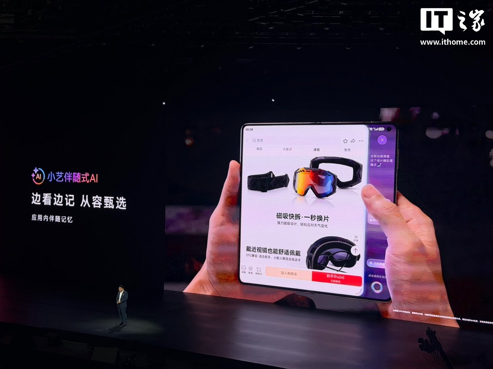

新闻 · 2026-11-25 08:00
华为折叠机外屏伴随式 AI 新交互将至，Mate X8 升级 HarmonyOS 7.0.0.135 可用
据IT之家报道，华为Mate X8大折叠手机将带来外屏伴随式AI新交互，需HarmonyOS 7.0.0.135及以上版本。小艺伴随式AI可智能感知屏幕与场景，提供全文摘要、长文导读、备忘待办、话题推荐等服务。用户在外屏使用时双击底部小艺导航条即可唤起，并通过拖动应用侧边在底部伴随、大屏伴随、极简伴随三种形态间切换；外屏采用全新交互形态，应用界面整体抬升，屏幕下方抬起小窗推荐服务。

来源与核验
单一信源报道，未交叉核实